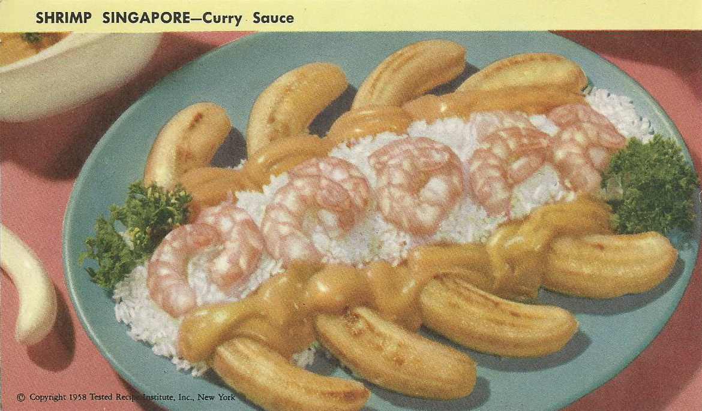

Singapore Shrimp Curry

Ingredients
- 4 firm bananas
- Melted butter or margarine
- Salt
- 1 pound fresh shrimp, cleaned and cooked
- 2 cups hot cooked rice
- Curry Sauce, at right
Instructions
- Set oven for moderately hot, 375°, and grease a shallow baking dish.
- Peel bananas; cut in half, crosswise, and arrange in the dish.
- Brush with melted butter; sprinkle lightly with salt.
- Bake 15 to 18 minutes or until bananas are fork tender.
- Meanwhile, place shrimp in the top of a double boiler; heat over hot water.
- When hot, place shrimp on a bed of cooked rice and arrange cooked bananas around edge.
- Pour part of the Curry Sauce on top; serve remainder on the side.
- Makes 4 servings.